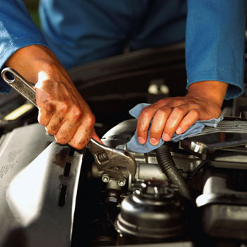

Autonix Select efectueaza o gama larga de reparatii mecanice intr-un atelier special amenajat, cu personal bine pregatit.
Avem in dotare o hala multifunctionala prevazuta cu elevatoare, scule si aparate speciale pentru diverse reparatii mecanice.
Executam reparatii mecanice si electrice pentru toate tipurile si marcile de autoturisme produse in strainatate dar si pentru cele de productie autohtona.
Servicii de reparatii mecanice
Dotarile tehnice si personalul service-ului nostru permit realizarea de interventii la sistemele de propulsie, de transmisie, de alimentare, de suspensie, de directie si de franare.